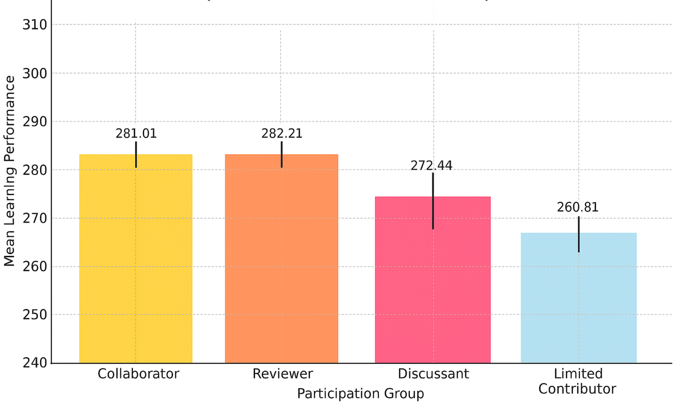
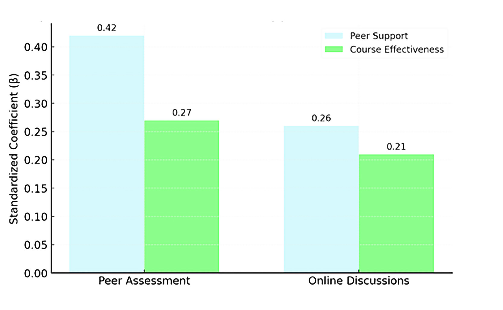
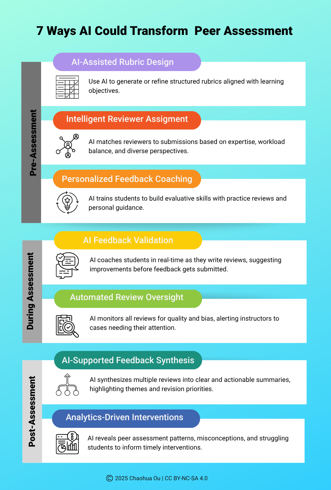

The big picture
If you've ever taught a large online course, you know the drill: online discussion boards become your go-to tool for student engagement. They're scalable, easy to set up, and research tells us they work. But let's be honest, they also come with their share of headaches: low participation, uneven contributions, or students going through the motions just to check a box.
So, is there a better, or at least complementary, way to drive deeper engagement and learning?
I explored this question with my colleague David Joyner in a recent large-scale study comparing the effects of peer assessment and online discussion on online students' learning. We analyzed data from 1,451 students in the same online graduate course over five years (Spring 2020 to Fall 2024). What we discovered has really shed light on how we think about strategies for student engagement.
What did we learn?
Peer assessment is a performance driver
Students who actively gave feedback to their peers (we called them "Collaborators" and "Reviewers") significantly outperformed those who mainly stuck to discussion boards ("Discussants") or barely participated at all ("Limited Contributors"). The takeaway? When students critically evaluate their peers' work and provide structured feedback, their own learning takes a serious leap forward (Figure 1).
Online discussion still matters
But before we write off discussion boards entirely, here's the plot twist: our "Discussants" did significantly better than students with minimal engagement. Discussion boards aren't the problem; they're just not the whole solution.
Peer assessment was a much stronger predictor of both perceived peer support and overall course satisfaction
Students didn't just perform better. They felt more supported and valued the course more highly when peer assessment was part of their experience (Figure 2).


What does this mean for teaching?
Online discussions are the warm-up, and peer assessment is the workout. Combined strategically, they create a learning rhythm that helps students move from participation to transformation.
Think of it this way: online discussions are like the warm-up. They loosen things up, get students talking, and build comfort. Peer assessment is the workout. It stretches their thinking, builds intellectual stamina, and strengthens their ability to evaluate and reflect. You need both to build learning muscles that last.
When you combine them strategically, you're creating a learning rhythm: online discussions offer easy entry points, while peer assessment provides structured, reflective engagement. Together, they help students move from participation to transformation.
But here are the challenges
Anyone who's implemented peer assessment knows it's not exactly plug-and-play. You've got to:
- Design clear rubrics (which takes time to create and refine)
- Train students to give quality feedback (not just "Great job!")
- Manage the logistics (who reviews whom? when? how many?)
- Deal with fairness concerns (Is this grade reliable? Is there bias?)
These challenges are exactly why many instructors stick with online discussions despite peer assessment's proven benefits. It's just… a lot.
Enter AI: a game-changer?
This is where things get exciting (and a bit futuristic). What if AI could tackle those persistent pain points? Not replace the instructor or eliminate the human element, but handle the heavy lifting so we can focus on what matters most: student learning.
Based on my research and emerging work in this space, I've been developing a framework for designing AI-augmented peer assessment. This framework includes seven elements organized across three stages of the peer assessment process. It aims at leveraging AI to streamline logistics, enhance quality feedback, ensure fairness, and ultimately create a richer and more engaging learning experience for all learners.

The framework: 7 ways AI could transform peer assessment
Pre-assessment: before students start reviewing
- AI-assisted rubric design. Imagine typing in your learning objectives and having AI generate a solid first draft of your rubric: clear criteria, performance levels, the works. You review it, tweak it, maybe even involve students in refining it. What used to take hours now takes minutes.
- Intelligent reviewer assignment. Instead of randomly assigning reviewers (or spending an hour manually matching students), AI does the heavy lifting. It considers who has relevant expertise, balances workloads, avoids conflicts of interest, and even ensures students get diverse perspectives. Smart matching, zero headache.
- Personalized feedback coaching. Before students review their peers' actual work, AI trains them. They practice on sample submissions, get immediate feedback on their comments ("This is too vague. Can you be more specific?"), and build their skills progressively. By the time they're reviewing real work, they know what good feedback looks like.
During assessment: while students are reviewing
- AI feedback validation. As students write their peer reviews, AI acts like a real-time coach. "Your comment is constructive, but could you add a specific example?" or "You've addressed criterion #1 well, but what about criterion #2?" It catches issues before feedback gets submitted, ensuring quality and relevance.
- Automated review oversight. Here's where AI becomes your teaching assistant. It monitors all reviews for quality, spots potential bias, flags suspiciously similar feedback (collusion, anyone?), and alerts you to cases that need your attention. You're not drowning in data. Instead, you're getting actionable insights about where to focus your limited time.
Post-assessment: after reviews are completed
- AI-supported feedback synthesis. Students receive feedback from multiple peers: some helpful, some redundant, some contradictory. AI synthesizes it all into a coherent summary: "Here are the common themes, here's where reviewers agreed, here's where they diverged, and here are your top three priorities for revision." Clear, actionable, not overwhelming.
- Analytics-driven interventions. AI analyzes patterns across all the peer assessment data. Which students are struggling? What common misconceptions keep appearing? Which rubric criteria are confusing? You get dashboards and insights that help you intervene early and refine your teaching. It's evidence-based decision-making on steroids.

The reality check
Now, before you get too excited (or worried), let me be clear: some of these elements exist in various tools today. Others are still in the research phase. Building a comprehensive platform that does all seven seamlessly? That's going to take serious development work, cross-disciplinary collaboration, and significant investment.
More importantly, we need to proceed thoughtfully. As we build these AI-powered solutions, we have to grapple with some hard questions:
- How do we protect student privacy while using their data to improve learning?
- How do we ensure AI doesn't perpetuate or amplify bias?
- How do we maintain transparency so students and instructors understand how AI is making decisions?
- Where's the line between helpful automation and over-reliance on algorithms?
The goal isn't to replace instructors or eliminate human judgment. It's to free us from the logistical nightmare so we can focus on what we do best: teaching, mentoring, and making thoughtful pedagogical decisions.
We're not there yet. But with thoughtful development, ethical consideration, and continued research, I think we can get there.
What do you think? I'd love to hear your experiences with peer assessment: the good, the bad, and the "never again."
Want to dive deeper?
If you are interested in the research behind this framework, here are some excellent resources:
- Darvishi, A., Khosravi, H., Sadiq, S., & Gašević, D. (2022). Incorporating AI and learning analytics to build trustworthy peer assessment systems. British Journal of Educational Technology, 53(4), 844–875. https://doi.org/10.1111/bjet.13233
- Ou, C. (2024). Engaging students with peer assessment. In C. Ou, Designing Socially Dynamic Digital Learning (pp. 98–112). Routledge. https://doi.org/10.4324/9781003368076
- Ou, C., & Joyner, D. A. (2025). Assess or discuss: Comparing peer assessment and online discussion for enhancing learning at scale. L@S '25: Proceedings of the Twelfth ACM Conference on Learning @ Scale, 222–226. https://doi.org/10.1145/3698205.3733927
- Ou, C., Thajchayapong, P., & Joyner, D. A. (2024). Open, collaborative, and AI-augmented peer assessment: Student participation, performance, and perceptions. L@S '24: Proceedings of the Eleventh ACM Conference on Learning @ Scale, 496–500. https://doi.org/10.1145/3657604.3664705
- Sichterman, B., Noroozi, O., Boetje, J., van Ginkel, S., Khosravi, H., & Versendaal, J. (2025). Supporting peer learning with artificial intelligence: A systematic literature review. Innovations in Education and Teaching International, 62(5), 1648–1664. https://doi.org/10.1080/14703297.2025.2530118
- Topping, K. J., Gehringer, E., Khosravi, H., Gudipati, S., Jadhav, K., & Susarla, S. (2025). Enhancing peer assessment with artificial intelligence. International Journal of Educational Technology in Higher Education, 22(1). https://doi.org/10.1186/s41239-024-00501-1
How to cite this post
Ou, C. (2025, October 23). Designing AI-augmented peer assessment. https://engagedigitallearning.com/blog/designing-ai-augmented-peer-assessment/